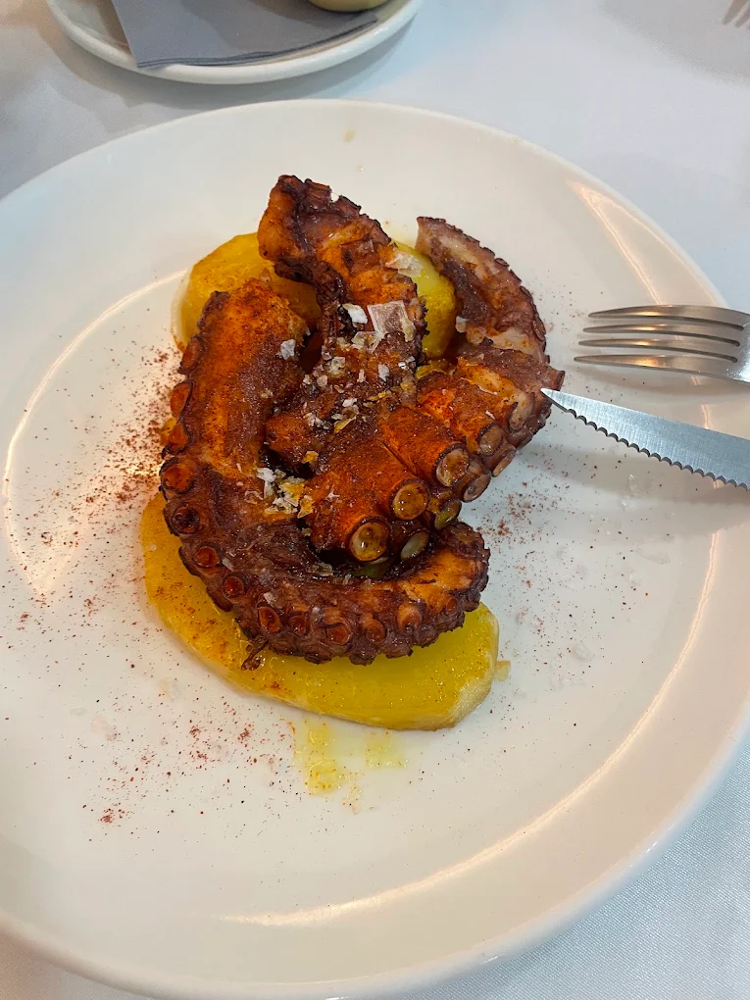
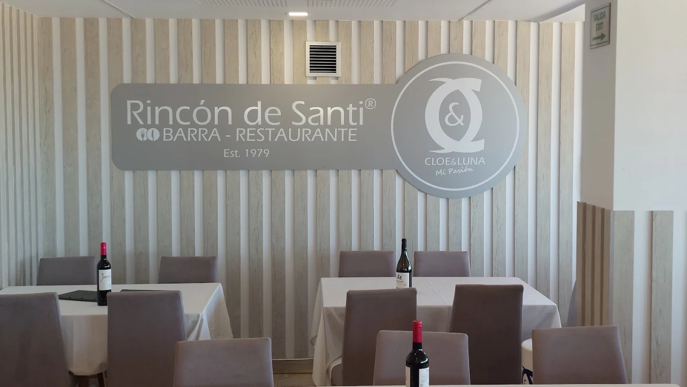

Arenales del Sol · Desde 1995
Especialidad en arroces, calderos y postres caseros junto al mar
Ver nuestra carta
Arenales del Sol · Desde 1995
Especialidad en arroces, calderos y postres caseros junto al mar
Ver nuestra cartaEl Rincón de Santi es mucho más que un restaurante — es un referente gastronómico en los Arenales del Sol. Con más de dos décadas sirviendo lo mejor de la cocina mediterránea, nos hemos convertido en el lugar donde la tradición culinaria se encuentra con la brisa del mar.
Nuestros arroces y calderos, elaborados con recetas que respetan la esencia de la cocina levantina, son nuestro orgullo. Cada plato nace del producto fresco del día, cocinado con paciencia y cariño, como en casa.


Comer en El Rincón de Santi es vivir la auténtica experiencia del Mediterráneo. El sonido de las olas, la brisa marina, el aroma de un buen arroz cocinándose a fuego lento y la calidez de un equipo que te trata como en casa.
Disfruta de una comida inolvidable con el Mediterráneo como telón de fondo, en la playa de los Arenales del Sol.
Trabajamos con proveedores locales para garantizar la máxima frescura en cada plato. Lo que llega hoy, se cocina hoy.
Una cuidada selección de vinos de Rioja, Ribera del Duero y otras denominaciones, cavas y champagnes para maridar cada plato.
Ven a disfrutar de la mejor cocina mediterránea junto al mar. Te esperamos con los brazos abiertos, el arroz a punto y un Gin Tonic preparado con cariño.
Calle San Bartolomé de Tirajana 45
03195 Arenales del Sol, Elche